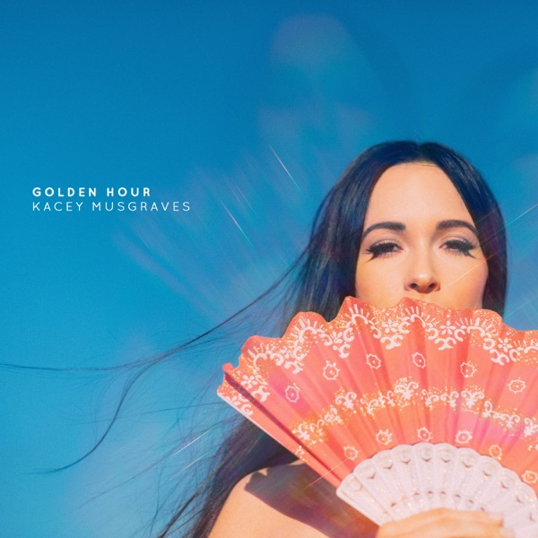

Golden Hour
Kacey Musgraves
Upgrade idea: No audiophile reissue exists. The original 2018 first pressing (B0027921-01-A-RE-1 WG/NRP) is preferred by collectors over later represses for earliest lacquer generation.
- Original release
- 2018
- Pressing year
- 2021
- Country
- US
- Format
- Vinyl LP, Album, Reissue, Repress (Clear, PRP Pressing)
- Label / Cat#
- MCA Nashville – B0027921-01 / MCA Records – B0027921-01
- Genres
- Pop, Folk, World, & Country
- Styles
- Country
- Discogs release
- 22109113
- Discogs master
- 1338231
- Apple Music
- Golden Hour
- Wikipedia
- Golden Hour
Production notes
Tracklist (Discogs)
| A1 | Slow Burn | |
| A2 | Lonely Weekend | |
| A3 | Butterflies | |
| A4 | Oh, What A World | |
| A5 | Mother | |
| A6 | Love Is A Wild Thing | |
| B1 | Space Cowboy | |
| B2 | Happy & Sad | |
| B3 | Velvet Elvis | |
| B4 | Wonder Woman | |
| B5 | High Horse | |
| B6 | Golden Hour | |
| B7 | Rainbow |
Tracklist (Apple Music)
| 1 | Slow Burn | 4:06 |
| 2 | Lonely Weekend | 3:46 |
| 3 | Butterflies | 3:39 |
| 4 | Oh, What a World | 4:01 |
| 5 | Mother | 1:18 |
| 6 | Love Is a Wild Thing | 4:16 |
| 7 | Space Cowboy | 3:36 |
| 8 | Happy & Sad | 4:03 |
| 9 | Velvet Elvis | 2:34 |
| 10 | Wonder Woman | 4:00 |
| 11 | High Horse | 3:33 |
| 12 | Golden Hour | 3:18 |
| 13 | Rainbow | 3:34 |
Personnel & credits
- Kacey Musgraves — Art Direction
- Kelly Christine Sutton — Art Direction
- Gena Johnson — Coordinator [Production Coordination]
- Jordan Lehning — Edited By
- John Hanes — Engineer [Engineered For Mix By]
- Wes Garland — Lacquer Cut By
- Jason Owen — Management
- Samantha Borenstein — Management
- Sandbox Entertainment — Management
- Greg Calbi — Mastered By
- Steve Fallone — Mastered By [With]
- Ivan Wayman — Mixed By [Assisted By]
- Canaan Sutton — Other [Voice Of Reason]
- Kelly Christine Sutton — Photography By, Design
- Daniel Tashian — Producer
- Ian Fitchuk — Producer
- Kacey Musgraves — Producer
- BTPR — Public Relations
- Benny Tarantini — Public Relations
- Craig Alvin — Recorded By
- Alberto Vaz — Recorded By [Assisted By]
- Zack Pancoast — Recorded By [Assisted By]
- Bobby Shin — Recorded By [Strings Recorded By]
Identifiers
- Barcode: 602567334460 (Scanned)
- Barcode: 6 02567 33446 0 (Printed)
- Matrix / Runout: B0027921-01-A WG (Side A)
- Matrix / Runout: B0027921-01-B WG (Side B )
- Matrix / Runout: 10-85244 / B002904501-A 179710E1/A2 (Side A [etched])
- Matrix / Runout: 10-85244 / B002904501-B 179710E2 1117021 (Side B [etched])
Notes
This edition is a repress from sometime in 2021, done at PRP after the previous pressings at Rainbo Records and United. Looks to be mastered at GZ instead of the original Sterling mastering.
Clear vinyl, gatefold jacket, printed inner sleeve.
No download code included.
Made in Canada sticker on the back.
A MCA Nashville Release. ℗ & © 2018 UMG Recordings, Inc., 401 Commerce Street, Suite 1100, Nashville, TN 37219. Manufactured and distributed in the United States by Universal Music Distribution.
Recorded [...] at Big Green Barn, Sound Emporium, House of Blues Nashville - Studios A & D, The Great Gazoo Reading Room, Royal Plum
Mixed by Shawn Everett at Subtle McNugget Studios
Assisted by Ivan Wayman
Mixed by Serban Ghenea at Mixstar Studios - Virginia Beach, VA
Engineered for mix by John Hanes
Mixed by Craig Alvin at the Great Gazoo Reading Room
Strings recorded [...] at the Library
Mastered [...] at Sterling Sound NYC
Notes & discrepancies
- Release year differs: your pressing=2021, Apple Music edition=2018. Apple Music typically streams the most recent remaster.
Golden Hour is Kacey Musgraves’ third studio album, released in March 2018 on MCA Nashville / Universal Music Group, and one of the most critically acclaimed and commercially successful country-adjacent albums of the decade. Produced by Musgraves, Ian Kirkpatrick, Daniel Tashian, and Ian Fitchuk, it won all four major Grammy Awards at the 2019 ceremony — Album of the Year, Best Country Album, Best Country Song, and Best Country Solo Performance — a sweep that announced Musgraves as one of the defining artists of her generation. The album blends country, pop, folk, and disco influences into something entirely its own: “Slow Burn,” “Rainbow,” “Happy & Sad,” “Butterflies,” and “Space Cowboy” are emotionally precise, melodically beautiful, and sonically adventurous in ways that country radio rarely accommodates.
The album was recorded during a period of personal happiness for Musgraves — a deliberate counterpoint to the breakup-and-heartache themes that dominate country music — and that warmth and contentment permeate every track. Its influence on the subsequent generation of country-pop artists has been substantial.
The 2021 US repress (MCA Nashville / UMe catalog B0027921-01) continues the standard pressing of the album on vinyl with matrix codes
10-85244 / B002904501-A 179710E1identifying standard UMe pressing plant and lacquer specifications.About this 2021 US pressing (Vinyl, LP, Reissue, Repress): MCA Nashville / UMe catalog B0027921-01, 2021 repress. Barcode 602567334460. Matrix 10-85244 / B002904501-A 179710E1.